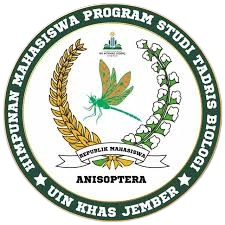

Metangas merupakan tradisi mandi uap tradisional yang dikenal dengan sauna biasanya menggunakan rempah-rempah sebagai campuran dalam air uap. Tujuan dari metangas ini untuk membersihkan pori-pori serta menghilangkan bau tidak sedap pada tubuh. Pelaksanaan tradisi ini dianggap penting karena mempelai pengantin harus bersih dan wangi saat upacara pernikahan nanti. Masyarakat melayu yang menjalankan tradisi ini percaya bahwa metangas ini memberikan dampak positif bagi tubuh serta mempererat tali persaudaraan baik dari pihak mempelai maupun tetangga dan masyarakat. Tradisi dilaksanakan sebelum upacara pernikahan digelar bisa sehari atau tiga hari sebelum upacara pernikahan. Makna dari metangas ini tidak menggambarkan sebuah filosofi yang mendalam hanya untuk memberikan wangi harum pada pengantin ketika pelaksanaan resepsi dan selama acara pernikahan berlangsung.
1. Meboreh (Berlulur)
Meboreh ini merupakan tahapan lulur tradisional menggunakan bahan tradisional. Digosok ke seluruh badan mempelai pengantin setelah itu di baluri lagi dengan boreh.
a. Mempersiapkan bahan boreh meliputi, beras, temu tis, daun delem, akar nawaristu, kenanga (sandat), cempaka, kunyit, pandan arum, cekur (kencur), gandapuro, gahru, jeruk purut.
b. Bahan ini biasanya akan ditumbuk menggunakan lesung, kemudian dihaluskan kembali dengan cobek batu. Pembuatan boreh ini bisa langsung dibuat ketika pelaksanaan, namun beberapa pelaku metangas membuat boreh seminggu atau lebih sebelum tradisi.
c. Jika boreh dalam keadaan kering, maka akan diberikan air agar membentuk lulur.
d. Boreh tersebut dilumuri ke seluruh tubuh mempelai, digosok dan dilumuri boreh lagi sebelum di bungkus dengan tikar.

Metangas ini mempelai pengantin duduk di kursi kecil kemudian mengaduk air rebusan rempah.
a. Setelah seluruh tubuh mempelai di borehi pengantin akan duduk di kursi kecil
b. Kemudian dibakar kan dupa dengan menggunakan piringan yang diisi bara
c. Tikar pandan di bentuk melingkar biasanya menggunakan dua tikar, kemudian mempelai pengantin dibungkus dengan tikar ini
d. Sebelum tikar ditutup, air rebusan yang masih tertutup daun pisang kemudian dandang tersebut diletakkan di depan mempelai, jika sudah tertutup mempelai akan menusuk daun pisang yang menjadi penutup dandang menggunakan kayu dadapan, jarak atau kelor, tergantung dari pelaku metangas, kemudian air rebusan itu diaduk dengan wajah yang menghadap ke atas.
e. Setelah itu mempelai dibungkus menggunakan tikar pandan dan ditutup dengan kain agar hawa panas dari air rebusan tidak keluar dan dikelilingi oleh pemuda dan pemudi.
f. Jika mempelai tidak kuat dengan hawa panas maka akan dipersilahkan untuk mengeluarkan kepala namun tidak membuka tikar.
Keanekaragaman hayati merupakan sebuah istilah yang menggambarkan berbagai macam tumbuhan, hewan dan mikroorganisme termasuk gen yang dimiliki dan ekosistem yang terbentuk. Keanekaragaman ini meliputi keanekaragaman gen, spesies dan ekosistem.

Tanaman nawaristu dikenal dengan akar wangi (chrysopogon zizanioides) atau vetiveria adalah tanaman yang memiliki aroma khas yang disebabkan oleh asam vetivenat yang berasal dari senyawa vetirol yang mengandung minyak atsiri pada bagian akar.
Padi merupakan tanaman musiman yang memiliki bentuk batang bulat berongga yang sering disebut jerami, memiliki daun memanjang dan ruas yang searah dengan batang daun. Fase vegetatif batang utama dan anakan akan membentuk rumpun dan bentuk malai ketika fase generatif.
Cempaka merupakan salah satu tanaman yang cukup populer dalam acara pernikahan yang sering disebut bunga kantil. Tanaman ini jenis pohon yang tingginya bisa mencapai 30 meter dengan batang yang memiliki warna abu-abu.
Pohon dadapan atau dadap ini termasuk tanaman polong-polongan yang memiliki bunga unik dan berwarna merah, tingginya bisa mecapai 25m. Memiliki akar yang tertancap dangkal hanya sekitar 30 cm atas tanah. Batang yang bergalur serta warna kulit abu kehijauan dan beralur, terdapat banyak cabang dan kokoh.

Tanaman gahru atau dikenal gaharu merupakan tanaman yang tingginya bisa mencapai 40 meter dengan diameter 50 hingga 60 cm. Daun tanaman ini memiliki bentuk lonjong yang memanjang dan meruncing, warna daun hijau dan mengilap dengan tepi daun yang merata.
Tanaman gandapura termasuk jenis semak dengan tinggi bisa mencapai 2 meter, percabangan yang sedikit, bentuk batang yang bulat dan dikelilingi rambut kasar. Memiliki daun tunggal yang bertangkai panjang, helai daun bercangap lima dan dalam yang panjangnya hingga 22 cm.

Jarak pagar merupakan tanaman yang sering di temukan di halaman atau pekarangan rumah, memiliki daun tunggal yang berlekuk dan bersudut 3 atau 5. Persebaran daun merata pada sekitar. Pada bagian bawah daun sedikit pucat dibanding dengan permukaan, memiliki bentuk daun jantung atau bulat telur melebar dan panjang sekitar 5 hingga 15 cm.
Jeruk purut merupakan tanaman yang sering dimanfaatkan daunnya sebagai bumbu aromatik masakan. Jeruk purut bisa tumbuh hingga 6 m dengan batang bengkok bercabang rendah, memiliki ranting yang berduri berukuran kecil hingga sedang dan sudut yang tajam.

Kelor merupakan tanaman yang memiliki banyak khasiat dan kegunaan. Memiliki batang tegak berkayu dengan warna putih keruh, permukaan memiliki tekstur kasar dengan arah pertumbuhan lurus dan diameter batang bisa mencapai 30 cm.
Sandat atau dikenal dengan kenangan merupakan tanaman yang memiliki bunga beraroma wangi dengan tinggi yang bisa mencapai 20 meter dan berdiameter 70 cm. Bentuk batang bulat, kulit berwarna abu-abu keputihan, memiliki daun tunggal yang berbentuk oval.
Kencur merupakan tanaman yang memiliki akar tinggal dengan cabang halus menempel pada rimpang. Tipe akar yang bergerombol, bercabang, serabut putih, warna cokelat yang gelap serta sedikit mengilap.
Tanaman kunyit merupakan tanaman obat herbal yang cukup terkenal di kalangan pengonsumsi ramuan herbal yang mengandung banyak manfaat. Kunyit memiliki karakteristik yaitu tumbuh secara berkelompok yang membentuk rumpun.
Tanaman delem atau nilam merupakan tanaman jenis semak, memiliki bentuk daun bulat dan lonjong berwarna hijau muda pada daun muda dan hijau tua pada daun yang sudah tua panjang berkisar 6 hingga 7 cm dengan lebar 5 hingga 6 cm.
Pandan wangi adalah tanaman yang sering ditemukan tumbuh liar di sekitar pekarangan rumah. Tanaman ini memiliki aroma legit dan wangi dengan akar yang besar dan tunjang untuk menopang tubuh yang semakin besar.

Pinang adalah tumbuhan yang hidupnya individual atau soliter memiliki batang yang lurus sedikit licin dan tinggi bisa mencapai 25 meter dengan diameter batang 15 cm disertai garing lingkar batang yang terlihat jelas.
Pisang merupakan tanaman herba yang memiliki akar rimpang dengan panggal ubi batang. Batang pisang merupakan jenis batang semu yang dibentuk dari pelepah daun pisang yang saling menutupi.
Tanaman secang memiliki karakteristik yang mirip dengan perdu tingginya bisa mencapai 10 meter dengan batang yang berbentuk bulat berwarna hijau kecoklatan yang dikelilingi duri bengkok.
Temu tis merupakan tanaman rimpang yang memiliki morfologi yang sedikit mirip dengan kunyit namun terdapat beberapa perbedaan dari rimpang ini yaitu memiliki warna yang kuning pucat, putih kekuningan.